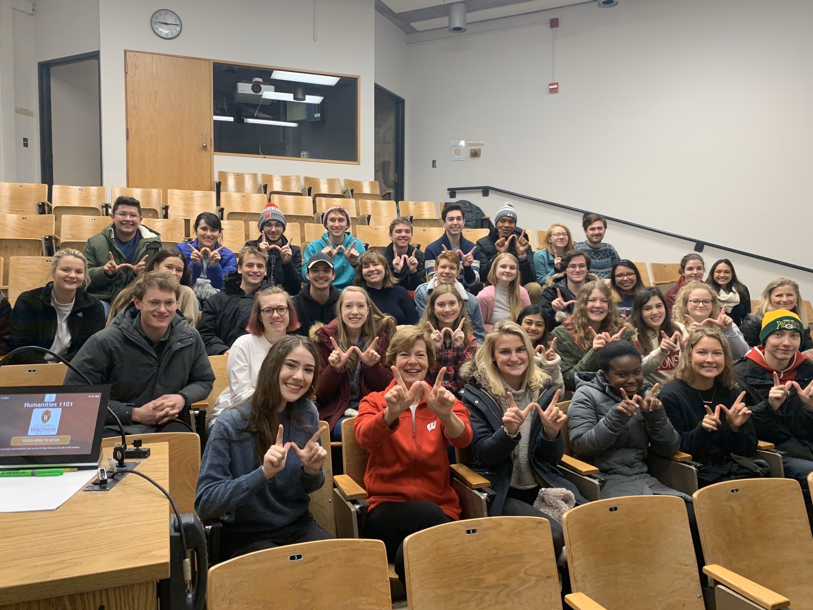
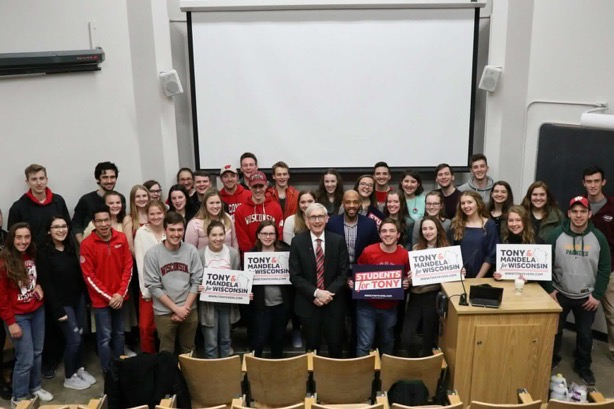
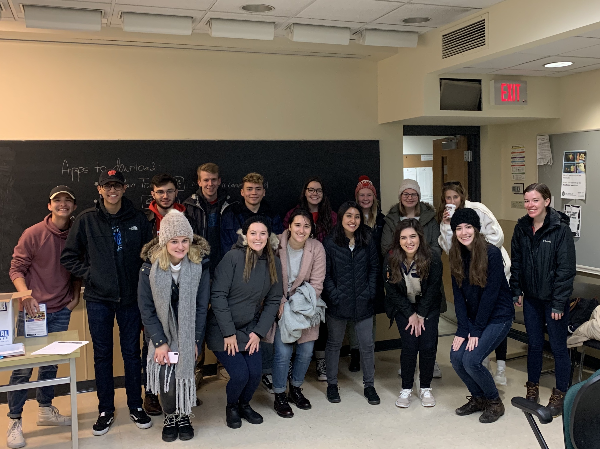

In 2016, I joined my first political campaign knowing nothing about organizing. I quickly learned how to manage volunteers and talk to voters, whether it be in-person canvassing (knocking on doors) or phone banking (calling voters). While the campaign I worked on suffered a tough loss, I was able to meet some local Lawrence University students who kept me engaged in politics in the months that followed. I quickly began organizing in Outagamie County and supporting as many candidates as I could while being a high schooler.
When I moved to Madison, my coursework began aligning a lot more with my newfound interest in working in politics. Being in the state Capitol, there were so many new opportunities to learn about state government and be in the center of all the action. My internship with the Democratic Party of Wisconsin was foundational for building my confidence in youth organizing and learning tips and tricks for our organizing tools. I directly applied what I learned at different organizing events like the "1Year2Win" canvassing weekend or the College Democrats of Wisconsin Leadership Summit.
Everything I've been learning about organizing has been completely re-imagined as we've worked through the COVID-19 pandemic. Old field strategies of talking to voters at the door and having massive rallies are no longer safe. Instead, I've spent the past six months utilizing new tools like relational texting and phone banking using an auto-dialer to reach voters from the safety of my home. This has allowed me to reach voters in new areas, speak with incredible campaign surrogates, and expand my professional opportunities. In preparation for the November election, I worked two jobs while holding two statewide and one national organizing positions. Through all of those experiences, I feel well equipped to organize in different races and elections as I enter the career field after I graduate in May.
  Over the last four years and some odd months, I've worked with a variety of campaigns and organizations to mobilize voters around elections. Below is a chronological timeline of campaigns I've worked and the capacities in which I served: